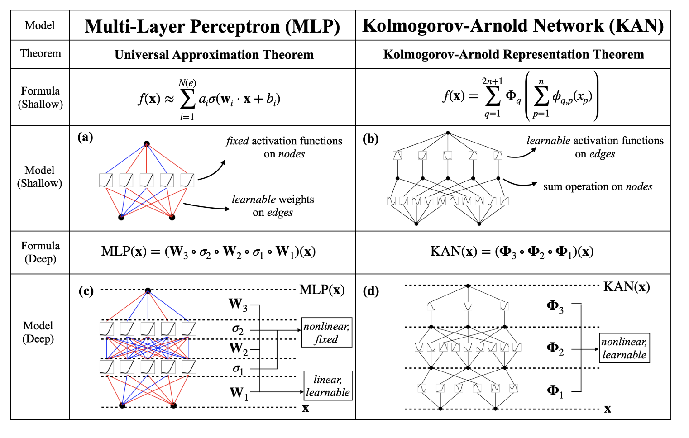
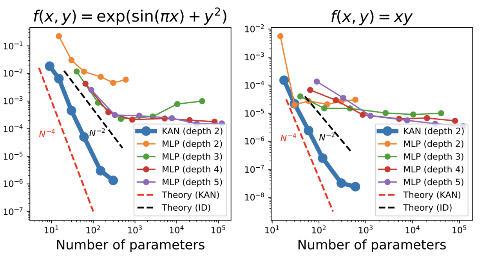
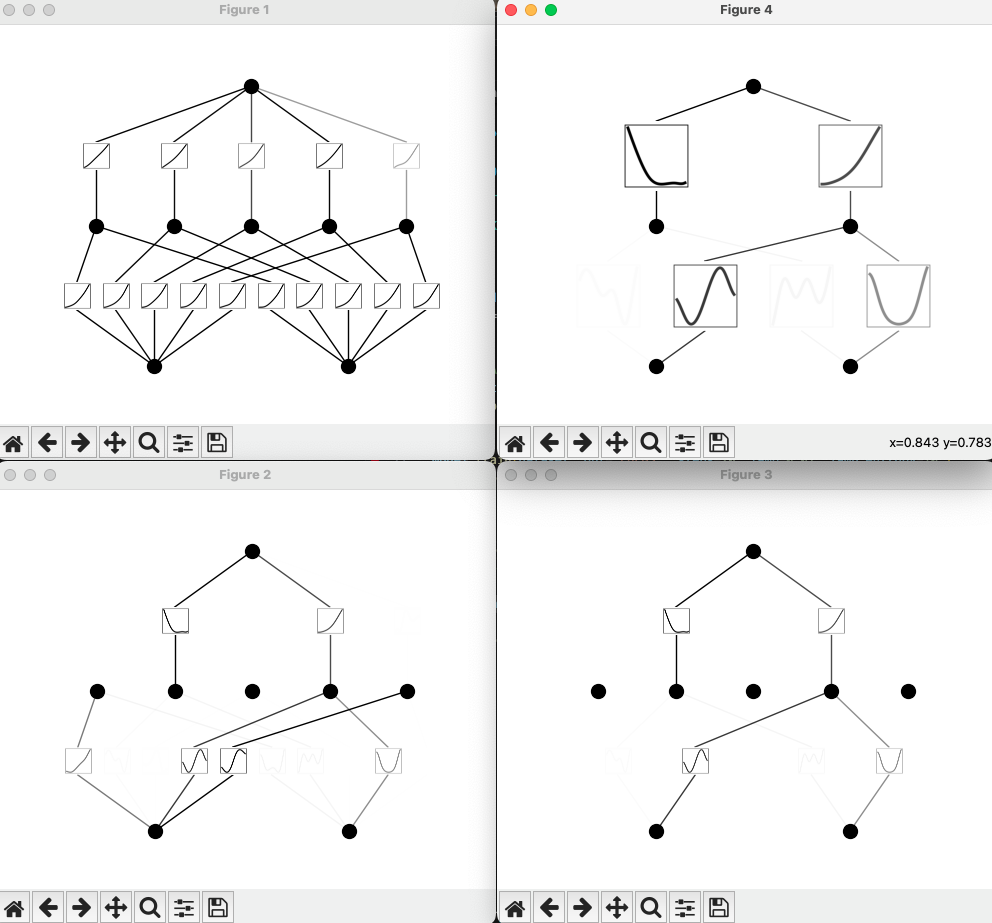
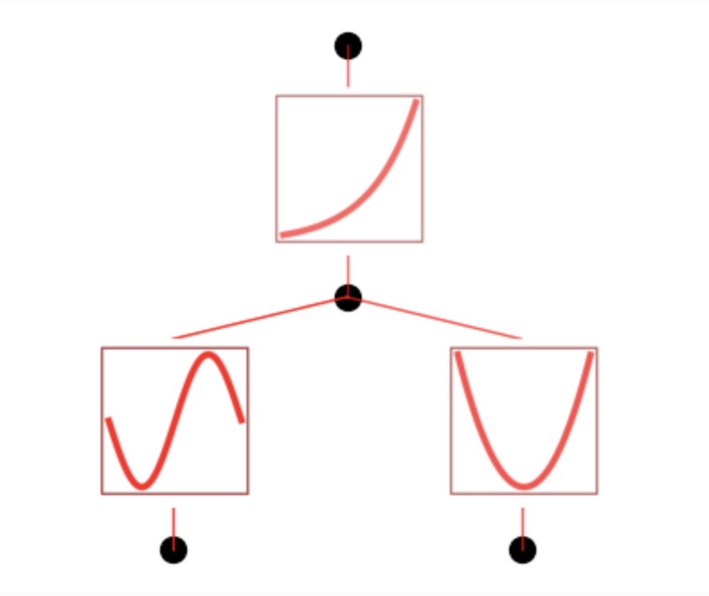

用大模型理解爆火的KAN网络
目录
五一假期的时候，KAN突然成为了热门话题。虽然最初我并没有计划弄懂它，但在老板的要求下，我还是探索了一下。
一、KAN是什么？
Kolmogorov-Arnold 定理是数学领域的一个里程碑，它揭示了多元函数能够通过一组更简单的函数来近似表示的原理。 在神经网络的研究领域，来自 MIT 的杰出研究者 Ziming Liu 将这一定理巧妙地融入，提出了创新的 KANs（Kolmogorov-Arnold Networks）概念。（GitHub地址：https://github.com/KindXiaoming/pykan）。
有兴趣挑战理解这个数学定理的朋友可以看一下这个讲解视频 https://www.youtube.com/watch?v=CkCijaXqAOM 博主徒手画 splines 曲线，并逐步阐释定理，非常引人入胜。
下面是我的理解哦！
如果你知道MLP的话，那可能也会对KAN刮目相看。

上面这个图就说明了为什么KAN很厉害，因为它和MLP是对偶的。
在深度学习中，MLP（多层感知器）是一种基础的神经网络结构，它由多个层组成，每层包含多个节点，节点之间通过边相连。**激活函数位于节点上，**以引入非线性，从而使网络能够学习复杂的函数映射。
KAN沿用了MLP的网络结构，它也由多个层组成，每层包含多个节点，节点之间通过边相连。激活函数位于边上。
这个对偶性让我想起了电里面的**电-磁对偶性。**在经典电磁学中，电场和磁场可以通过麦克斯韦方程组相互关联。在某些情况下，电场和磁场的角色可以互换，而物理定律保持不变。这种对偶性通常会解释定律的深层次结构和统一性。当然物理和AI两个领域不一样，有可能不能做这样的对比。
二、KAN能做什么？
- KAN能够拟合数学公式。MLP也可以，但是KAN能用更少的参数拟合，准确性也更好。
下图是KAN和MLP拟合同一个表达式的对比。以左边的图为例，可以看出，KANs在参数数量较少的情况下，其准确度和MLPs相比有更快的增长趋势。

- 强大的可解释性
这是另一个很令人激动的地方。在KAN里面，你可以看到线条的形状并且自主选择和锁定激活函数的公式。
首先，我们需要理解激活函数的作用。激活函数是神经网络中的关键组件，它们引入了非线性，使得网络能够学习和模拟复杂的函数映射。虽然激活函数通常是非线性的，以增加模型的表达能力，但在某些情况下也可以使用线性函数。然而，线性函数由于其简单性，可能在拟合复杂模式时不如非线性函数有效。
KAN定义了一系列可以选择的激活函数，总共有24种。这些激活函数包括但不限于平方、立方、正弦（sine）、余弦（cosine）、指数（exponential）等函数。
用一个例子来说明它强大的可解释性。
假设现在有如下表达式生成的数据。（在训练的时候并不知道这个表达式）
$$ f(x) = \exp\left(\sin\left(\pi x_{0}\right) + x_{1}^2\right) $$
定义一个[2,5,1]的网络。2、5、1表示的是节点。前面说过，activation function是定义在边上的，也就是说节点与节点之间会有activation function。
妙的是这些activation function是可以学习的——它们会越来越像他们原本的样子。
下面是它们的图，Figure 1是初始化，所有激活函数都长一个样子。
Figure2是网络训练20步之后的结果。可以看到激活函数已经出现正弦函数和平方的线条了。
Figure3是进行剪枝，去掉不重要的节点和激活函数。
Figure4是最后的样子，右边三个激活函数基本上符合咱们数据的生成函数。
作者的例子 https://kindxiaoming.github.io/pykan/Examples/Example_4_symbolic_regression.html 做的更精细，结果也更精确。

KAN还有一些其他的功能，例如能解微分方程、在学习的过程中有记忆力等等。这个先不谈，后面用到了再说吧。
另外，调参也是一门技术活。上面的例子，作者最后画出的图和公式一模一样。他也在GitHub Readme上面给出了很多调参建议。

三、 大模型帮你理解KAN网络
如果看前面提到的论文和视频没看懂的话，没有关系，咱不是还有大模型嘛。
来吧，开整！
请用生动的语言给一个20岁的大朋友解释splines以及Kolmogorov-Arnold
好的，想象一下你是一位艺术家，手里拿着一支画笔，准备在画布上绘制一幅美丽的风景画。但是，你不是简单地画直线，而是要画出一条流畅、优雅的曲线，来描绘远处的山峦或者蜿蜒的河流。在数学和计算机图形学中，我们有一套特殊的工具来帮助我们绘制这样的曲线，这就是所谓的“splines”。
Splines是一种数学曲线，它们非常平滑，没有尖锐的角或突然的转折。你可以把它们想象成一种非常听话的画笔，无论你怎么移动，它都能画出一条完美的曲线。在计算机图形设计中，splines被用来创建复杂的形状和动画路径，使它们看起来非常自然和流畅。
现在，让我们来谈谈Kolmogorov-Arnold。这听起来可能有点复杂，但它实际上是一个关于如何测量和比较不同曲线复杂性的数学概念。想象一下，你面前有两条曲线，一条是简单的圆弧，另一条是复杂的螺旋形。虽然它们的长度可能相同，但它们的复杂性和形状却大不相同。
Kolmogorov-Arnold复杂性（也称为K-复杂性）是衡量一个对象（比如曲线）可以用多简单的规则或算法来描述的度量。就像你可能会问：“我需要多少步骤来画出这条曲线？”或者“这条曲线可以用多简单的数学公式来表示？”K-复杂性越低，意味着曲线可以用更简单的规则来描述。
所以，splines就像是你手中的画笔，帮助你在数学和计算机图形的世界里绘制出平滑而优雅的曲线。而Kolmogorov-Arnold就像是你用来评价这些曲线复杂性的标尺，它帮助你理解这些曲线背后的数学规律和结构。通过这些工具，我们不仅能够创造出美丽的视觉效果，还能够更深入地理解数学和自然界中的形状和模式。
如果还没有理解，放出小学生解释版本吧~
请用生动的语言给一个10岁的小朋友解释splines以及Kolmogorov-Arnold
好的，亲爱的小朋友，让我们一起来想象一些好玩的东西想象一下，你有一个长长的橡皮筋，你可以用它来连接两个点，对吧？现在，如果你想要让这个橡皮筋更有趣一些，你可能会让它弯曲，或者扭来扭去的。在数学里，我们有一个特别的名字来称呼这种弯曲的橡皮筋，叫做“splines”。
想象一下，你把橡皮筋的两端固定在两个点上，然后你想要橡皮筋尽可能平滑地弯曲，就像你在画画时用铅笔画一条优美的曲线一样。这就是splines做的事情，它们是数学家用来模拟平滑曲线的一种工具。
现在，让我们来谈谈Kolmogorov-Arnold。这个名字听起来可能有点复杂，但它其实是一个关于如何测量和比较不同曲线弯曲程度的概念。你可以把它想象成一种特殊的尺子，用来测量你的橡皮筋弯曲得有多厉害。
Kolmogorov-Arnold告诉我们，即使两条曲线看起来弯曲得差不多，它们的弯曲程度也可能完全不同。这就像两个朋友，他们可能看起来一样高，但实际上他们的身高可能相差几厘米。Kolmogorov-Arnold就是帮助我们了解这些微小差别的工具。
所以，splines就像是橡皮筋，用来创造平滑的曲线，而Kolmogorov-Arnold就像是一把尺子，用来测量这些曲线的弯曲程度。数学家们用这些工具来解决很多复杂的问题，就像你用橡皮筋和尺子来创造和测量你的艺术作品一样！
太好了，终于理解了吧！